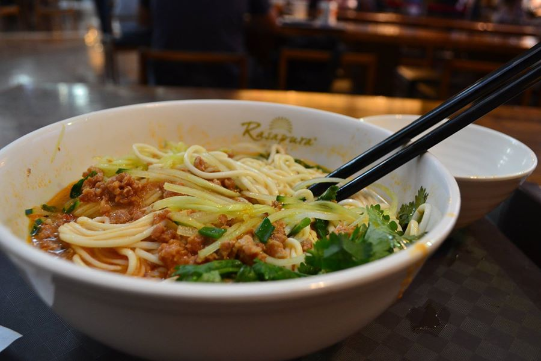

Ramen Recipe
Ingredients
- 200 gr minced pork meat
- 5 cups chicken stock
- 4 stalks green onion
- 1/2 cloves garlic
- 4 tbsp soy sauce
- 400 gr ramen noodles
- Sesame oil
Instructions
- Chop the garlic.
- Place a pan on medium heat and add oil, garlic and green onion.
- When caramelized, add everything except for noodles and bring to boil.
- Add noodles, cook for another minutes, then serve.